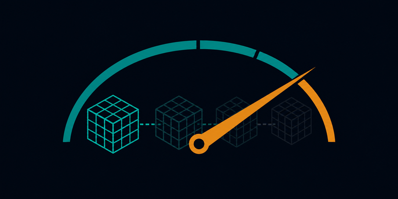
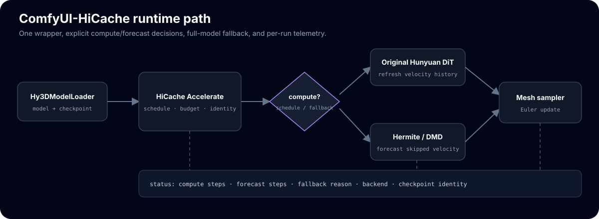

Skip Hunyuan3D DiT steps by forecasting flow-matching velocity
One ComfyUI node, HiCache Accelerate (Hunyuan3D), wired between Hy3DModelLoader and the mesh sampler. On compute steps the shape DiT runs normally and its output is cached; on skipped steps the DiT is not called and the flow-matching velocity is forecast from the cached anchors.
cd ComfyUI/custom_nodes
git clone https://github.com/Archerkattri/ComfyUI-HiCache
pip install -r ComfyUI-HiCache/requirements.txt # just: hicache-pp
01
Evidence
| Sampling speedup, hermite interval=3 (in ComfyUI) | 2.68x — 0.70 s vs 1.87 s baseline over 30 steps |
|---|---|
| Mesh F1@0.05 vs unaccelerated baseline (hermite i3) | 0.825, above the 0.751 different-seed floor |
| DiT forwards run, hermite i3 (30 steps) | 11/30 computed, 19 skipped (dmd i5 runs 7/30) |
| DMD interval=5 in ComfyUI (2-mini) | 1.69x speedup, F1 0.719 — at the seed-noise floor |
| Upstream Hunyuan3D-2.1, DMD interval=5 | 0.860 F-score at 1.79x speedup (baseline 0.911) |
| Upstream Hunyuan3D-2-mini, DMD interval=5 | 0.794 — exactly lossless vs baseline, at 1.69 s |
| CPU unit tests | 45 passed, no ComfyUI needed |
02
Media

03
Install & verify
pytest # expect 45 passed (CPU-only, no ComfyUI needed)
04
Limits
What this release does not claim (from the release notes):
- In-ComfyUI GPU validation.
05
Family
| Runs on | ComfyUI + ComfyUI-Hunyuan3DWrapper |
|---|---|
| Sibling nodes | ComfyUI-TRELLIS-HiCache · ComfyUI-TRELLIS2-HiCache |
| Standalone counterparts | hunyuan2-plus-plus · hunyuan2.1-plus-plus |
| Forecast core | hicache-plus-plus (PyPI) |